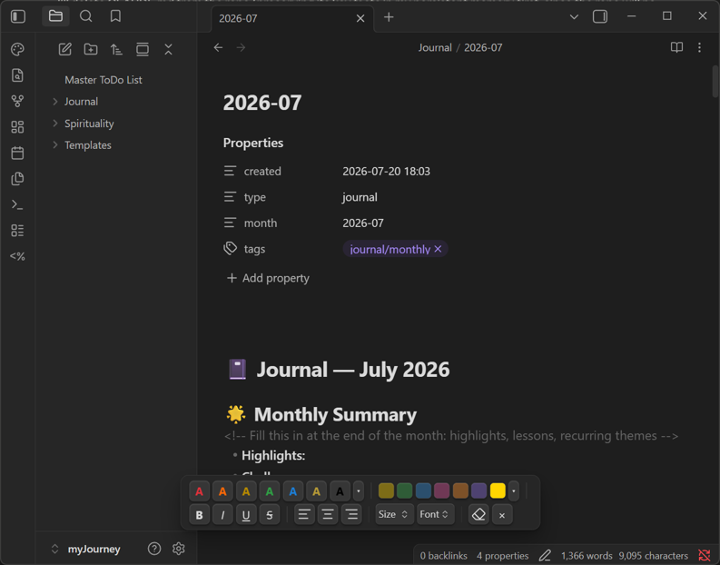
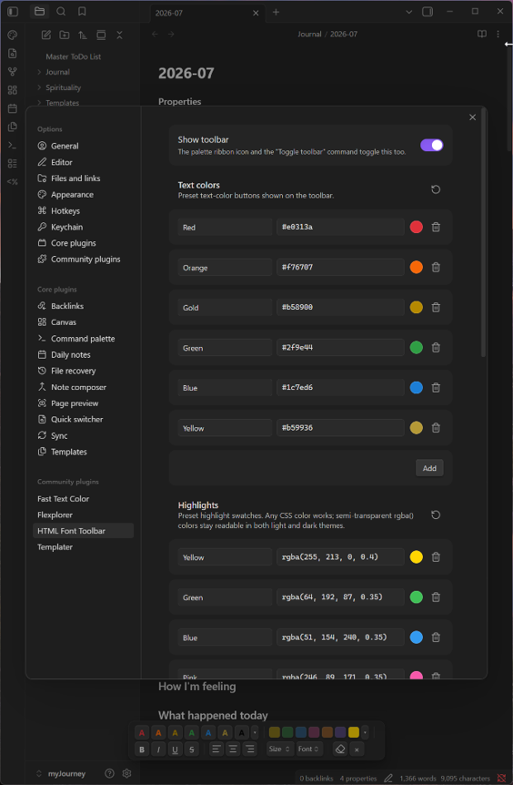

A free plugin for Obsidian that adds a floating, Word-like formatting toolbar to your notes: text colors, highlights, font sizes, font families, bold/italic/underline/strikethrough, and alignment. What makes it different from every other formatting plugin: everything it produces is one clean inline HTML span — stack as many styles as you like and they merge into a single tag instead of nesting wrappers.
<span>Free and open source, for Obsidian on the desktop. The plugin is being submitted to the official Obsidian community plugin directory; once accepted it will be installable directly from Obsidian via Settings → Community plugins → Browse. Until then it can be installed manually from the GitHub release.
Plugin on GitHub Latest Release Donate with PayPalManual install: download main.js, manifest.json, and styles.css from the release page into <your vault>/.obsidian/plugins/html-font-toolbar/, then enable the plugin in Settings → Community plugins.
If this plugin is useful to you, consider supporting its development with a donation — thank you!

